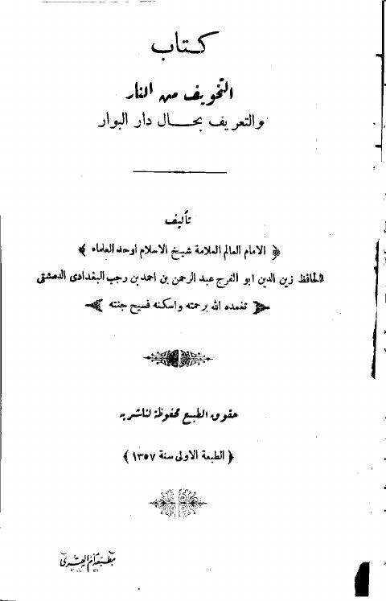
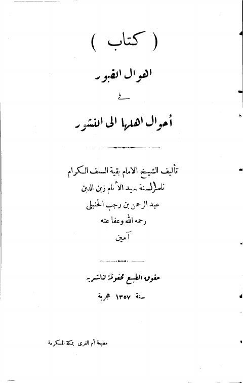

كتاب التخويف من النار والتعريف بحال دار البوار - ط. أم القرى كتاب التخويف من النار والتعريف بحال دار البوار - ط. أم القرى عبد الرحمن بن أحمد بن رجب الحنبلي
كتاب أهوال القبور في أحوال أهلها إلى النشور- مطبعة أم القرى كتاب أهوال القبور في أحوال أهلها إلى النشور- مطبعة أم القرى عبد الرحمن بن رجب الحنبلي